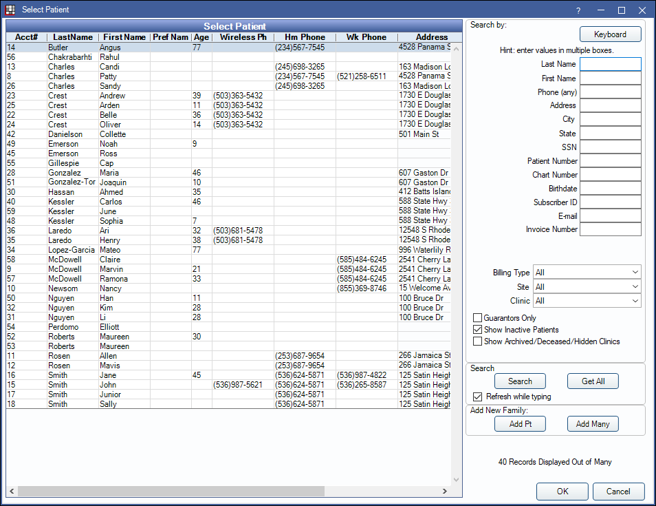
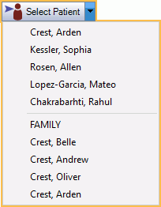

Select Patient
Use the Select Patient window to search and select patients in Open Dental.
In the Main Toolbar, click Select Patient.

Alternatively, use the keyboard shortcut Ctrl + P to open the Select Patient window.
Double-click on the patient to select. The patient record will open in whichever module the user began in. Alternatively, select the patient and click OK.
By default, only up to 40 patients list in the Select Patient grid at once. Names are sorted alphabetically by last name. The columns of information are customizable in Display Fields.
Keyboard: Click to use the built-in Windows keyboard. This button is not available for Open Dental Cloud users.
Search by: To filter the list, enter criteria in the Search by area. Users can search by one or many criteria and enter information by typing or using the on-screen keyboard.
- First Name: By default this field searches patient first name only. To also search preferred name, see Miscellaneous Setup.
- SSN: Any user can search by Social Security Number (SSN). If SSNs are masked, only users with the Patient Social Security Number View permission can right-click to view the full number.
- Billing Type: Options are defined in Definitions: Billing Types.
- Site: Options are defined in the Site List.
- Clinic: If using Clinics, filter the list to patients who are associated to a specific clinic as well as patients who are unassigned. Patients are associated to clinics when the clinic is their default or if they have any appointments in the clinic. The default selection is the clinic selected in the main menu.
- Guarantors Only: Check to only list guarantors.
- Show Inactive Patients: Check to include patients with a status of Inactive. This preference can be defaulted to on or off in Miscellaneous Setup.
- Show Archived/Deceased/Hidden Clinics: Check to inlcude patients that have a status of Archived or Deceased, or whose default clinic is marked hidden.
- Show Merged Patients: Check to include patients who have been merged into another patient. Option only displays if Show Archived/Deceased/Hidden Clinics is checked.
Search: Click to update search results when Refresh while typing is not selected.
- Only full string matches will display, with exact matches listing first. If a user searches for "cott", only results that start with "cott" will display (e.g., Cotter). Results that include "cott" mid-string will not (e.g., Scott).
- When searching patients, use the up and down keys on the keyboard to quickly navigate to a patient. Use the Enter key to quickly select the highlighted patient.
Get All: List all patients (more than 40) that meet the search criteria and activate the vertical scrollbar. When this option is clicked, all patients that match the string of characters entered as search criteria (including mid-string characters) will show. Next Visit and/or Last Visit dates will not be visible when all patients are listed.
Refresh while typing: Determines whether the patient list automatically refreshes as users type. Enable or disable this checkbox entirely in Miscellaneous Setup.
- Checked: As users type search criteria, the patient list will automatically refresh with matching results. The setting affects the current workstation only.
- Unchecked: Do not refresh while typing. After entering search criteria, users must click Search or use the Enter key to update the results.
Add New Family: Users must always search for at least patient last name to see if a patient record exists. If it doesn't, users can add a new patient record using one of the following options:
- Add Pt: Add a single patient. See Edit Patient Information.
- Add Many: Add multiple family members at once. See Add Family.
Select Patient Dropdown
Another way to select a patient is by clicking the Select Patient dropdown in the Main Toolbar. The last five patients selected will show, as well as all family members associated with the current patient. Click on a name to select.
Other Options
- Click on a different family member in the Family Module or Account Module.
- Click on a patient's appointment.
- If the text PatNum:##### is currently copied to the clipboard, clicking Select Patient launches the copied patnum (e.g., if PatNum:1524 is copied to the clipboard, Patient Number 1524 is selected).